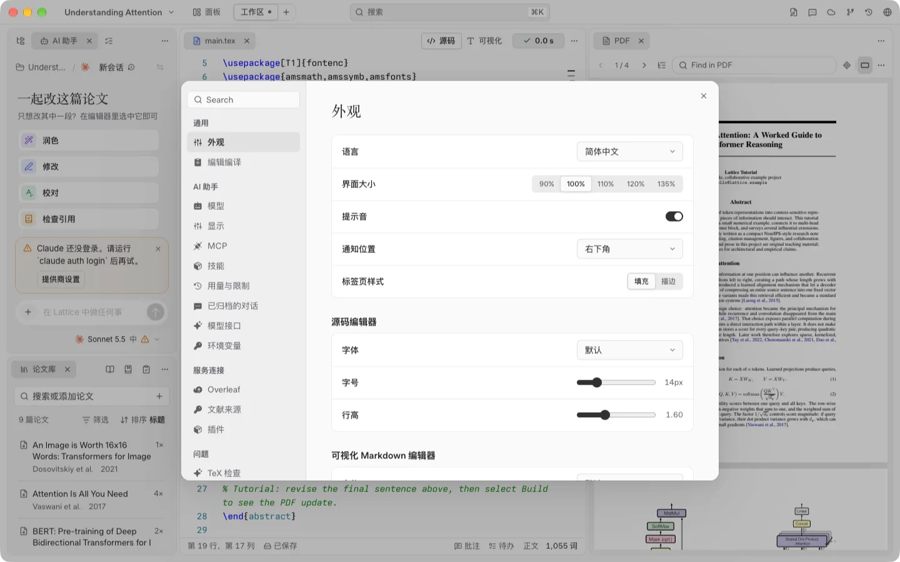
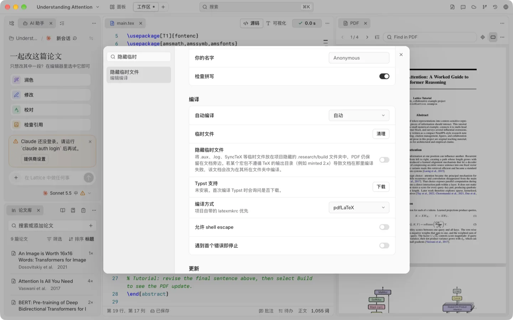

设置与快捷键
设置
打开 Lattice › 设置…（⌘,）。顶部的搜索框可以按名称找到任何设置，也认得你可能用的说法：搜「.aux」会找到 隐藏临时文件。

| 分组 | 页面 | 内容 |
|---|---|---|
| 通用 | 外观 | 语言（跟随系统、English 或简体中文）、界面大小、声音、通知位置、标签样式；源码编辑器和可视化 Markdown 编辑器的字体、字号和行高；主题（颜色主题、配色、主题文件、色调、主题色、毛玻璃）；代码主题；标题栏工具。见 插件与主题。 |
| 编辑编译 | 编辑器：键盘方案（默认、Vim 或 Emacs）、你的名字、检查拼写（使用 macOS 的检查器）。编译：自动编译、临时文件和 隐藏临时文件、Typst 支持，打开项目后还有编译方式、shell escape、遇到首个错误即停止 和实时预览。更新：当前版本和 检查更新。见 编译与排错。 | |
| AI 助手 | 模型、显示、MCP、技能、用量与限制、已归档的对话、模型接口、环境变量。见 AI 助手。 | |
| 服务连接 | Overleaf、文献来源（文献检索用的密钥）、插件。 | |
| 问题 | TeX 检查、日志。 | |
| 关于 | 致谢。 |

⌘+、⌘− 和 ⌘0（或 视图 › 放大 / 缩小 / 实际大小）调整界面大小，与 外观 › 界面大小 是同一个设置，对所有窗口生效。
快捷键
按 ⌘?（⌘⇧/）打开 快捷键，查看完整列表，可以按名称或按键筛选。列表跟随当前可用的命令，因此总是最新的。值得先记住的几个：
| 按键 | 作用 |
|---|---|
⌘K |
命令面板：按名称找到任何命令 |
⌘S |
保存并编译 |
⌘P |
快速打开文件 |
⌘⇧K / ⌘⇧L |
插入引用 / 引用编号 |
⌘⇧J |
在 PDF 中查看 |
F8 / ⇧F8 |
下一个 / 上一个编译问题 |
⌘⇧F |
在项目中查找 |
⌘⌥1、⌘⌥2、⌘⌥3 |
项目、论文库、AI 助手面板 |
⌘1 … ⌘9 |
切换工作区 |
⌘⇧D |
专注 |
⌘W / ⌘⇧T |
关闭标签 / 重新打开 |

想在编辑器里用 Vim 或 Emacs 按键，在 设置 › 编辑编译 › 键盘方案 中设置。